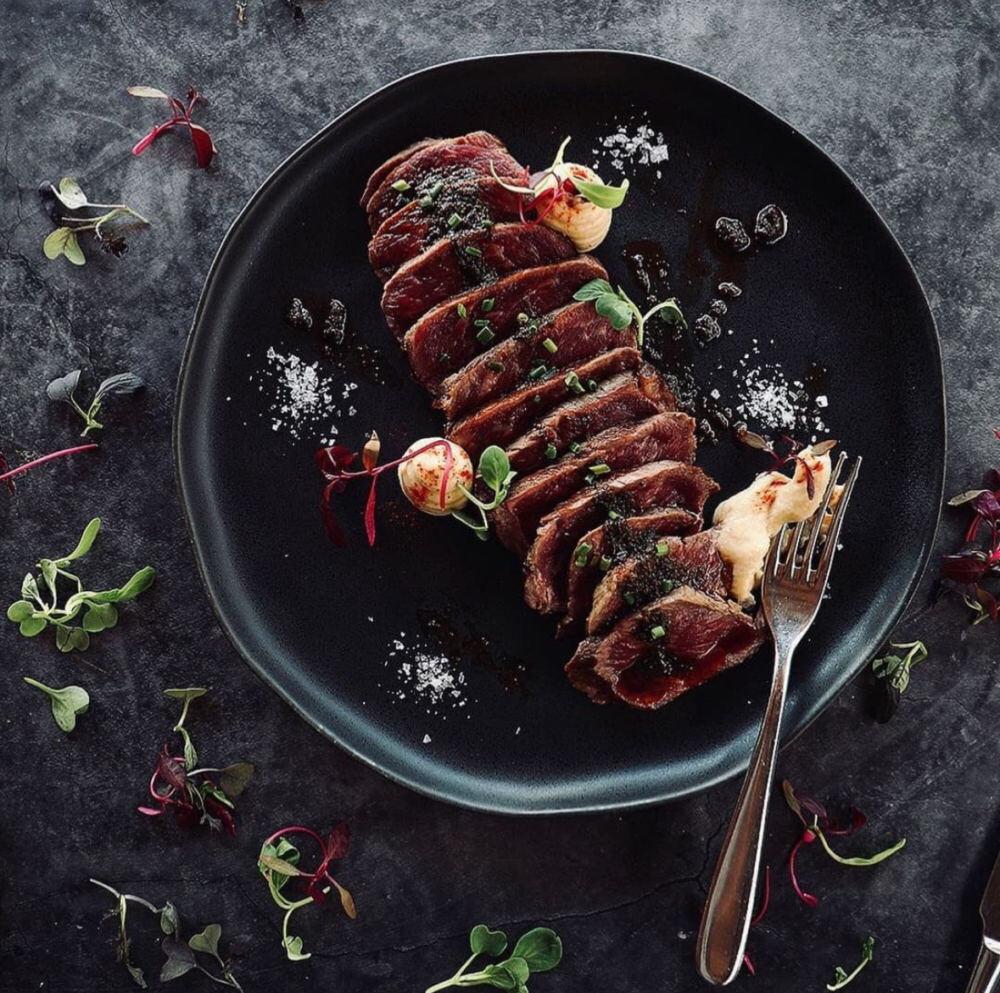
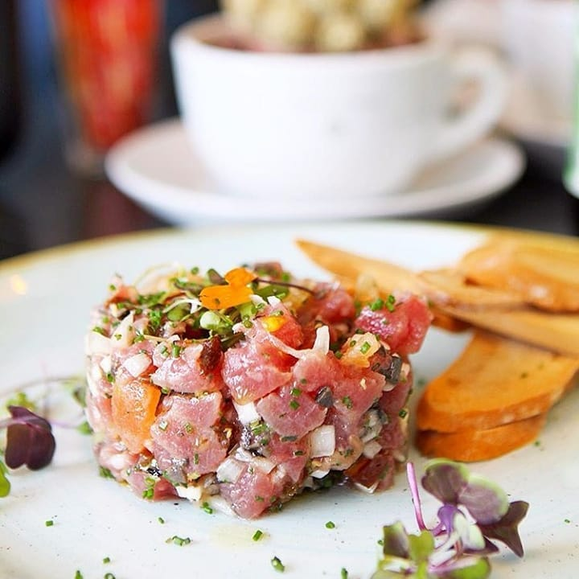
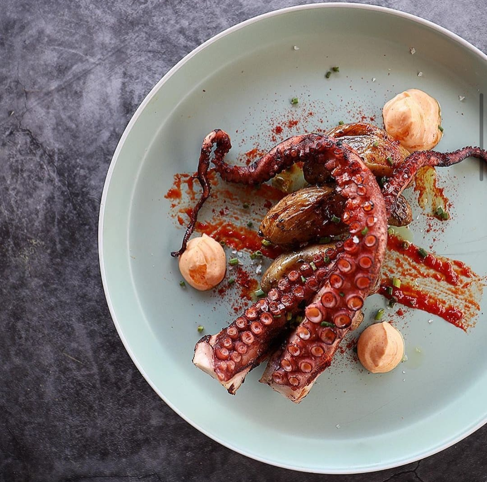
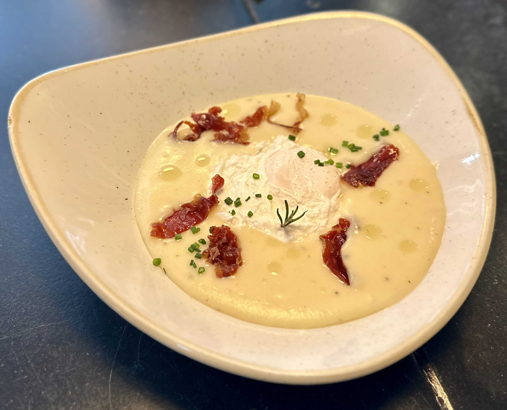
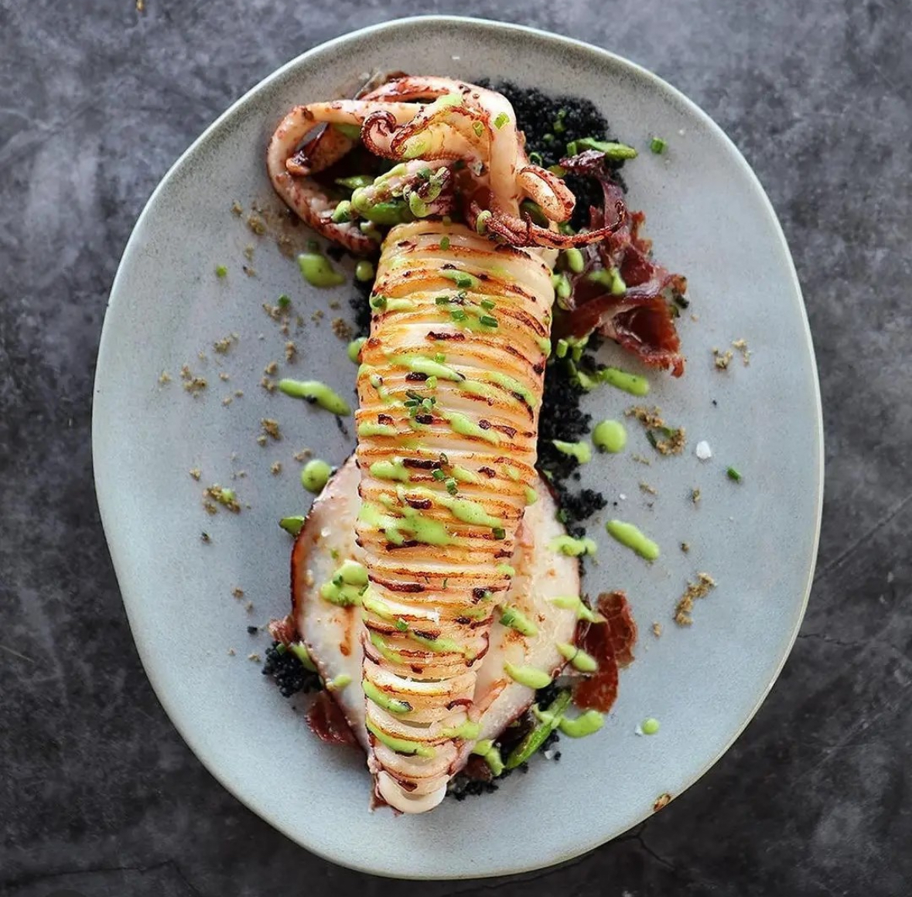
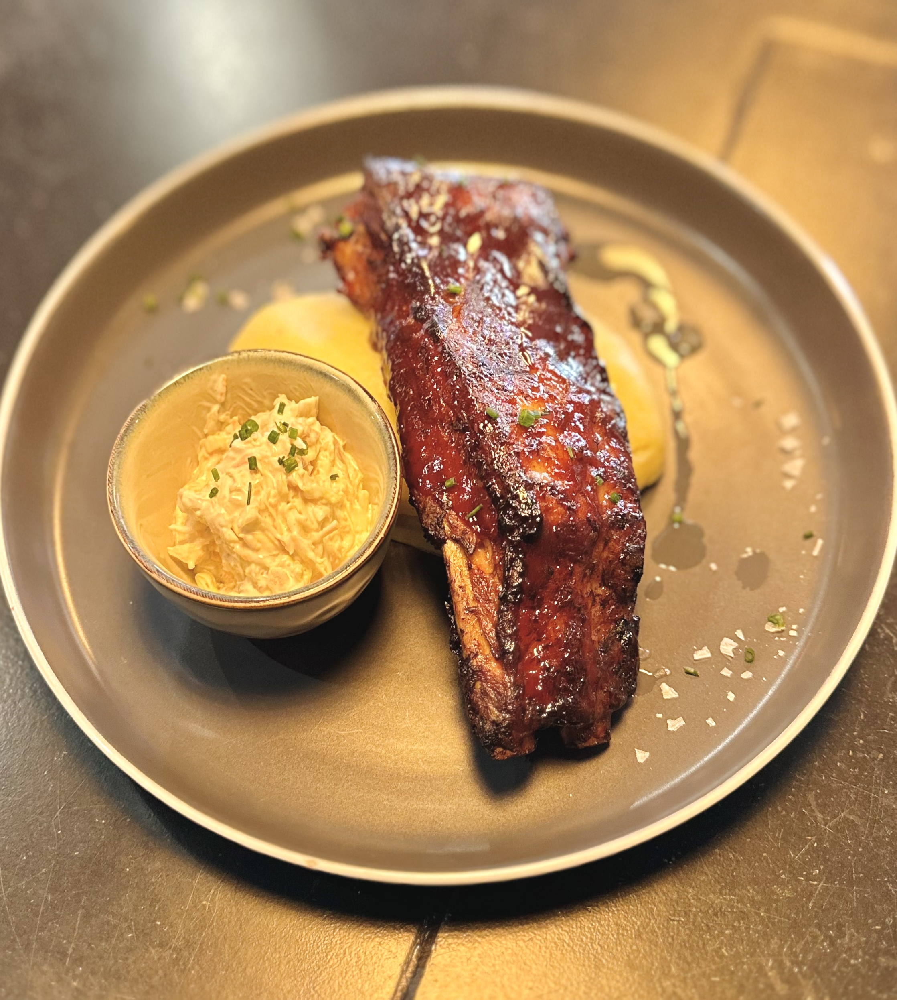

Nosaltres
Cuina Mediterrània | Vista al Mar
El restaurant Ngruna ofereix una experiència única amb la seva impressionant vista al mar i una fusió de sabors mediterranis. El seu ambient acollidor i l’atenció al detall el converteixen en el lloc perfecte per a una menjada memorable al costat de l'oceà.





